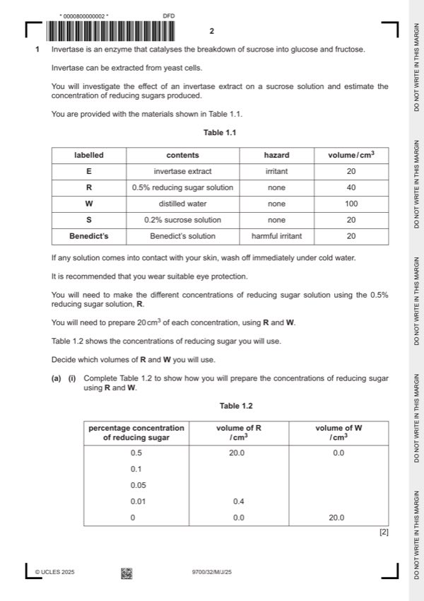

Question 1

Original paper page 2
Part 1(a)(i) — solution
1 correct volumes of R (4.0, 2.0) ; 2
Mark points
- Include the ideas shown in the solution above.
Part 1(a)(ii) — solution
1 heading for independent variable: percentage concentration of reducing sugar (before heading for dependent variable) 5
and no units in body of table ;
Mark points
- Include the ideas shown in the solution above.
Part 1(a)(iii) — solution
records the time for W as ‘more than 120’ and records the time for E as a value less than 120 ; 1
Mark points
- Include the ideas shown in the solution above.
Part 1(a)(iv) — solution
correct estimate for W and E based on candidate’s results ; 1
Mark points
- Include the ideas shown in the solution above.
Part 1(a)(v) — solution
1 sucrose is not a reducing sugar ; 3
Mark points
- Include the ideas shown in the solution above.
Part 1(a)(vi) — solution
any two from: 2
Mark points
- Include the ideas shown in the solution above.
Part 1 — solution
use concentrations with narrower intervals ;
Mark points
- Include the ideas shown in the solution above.
Part 1(b)(i) — solution
1 x-axis: percentage concentration of catalase 4
and
y-axis: number of bubbles of oxygen in 5 minutes ;
Mark points
- Include the ideas shown in the solution above.
Part 1(b)(ii) — solution
6.0 ; 1
Mark points
- Include the ideas shown in the solution above.
Part 1(b)(iii) — solution
as the concentration of catalase increases the number of bubbles of oxygen increases ; 1
University Press & Assessment 2025 Page 8 of 10
9700/32 Cambridge International AS & A Level – Mark Scheme May/June 2025
Mark points
- Include the ideas shown in the solution above.
Part 1(b)(iv) — solution
hydrogen peroxide, breaks down / forms oxygen, with no enzyme ; 1
Mark points
- Include the ideas shown in the solution above.
Part 1(b)(v) — solution
measuring the volume of oxygen or description e.g. using a gas syringe, water displacement method ; 1
Mark points
- Include the ideas shown in the solution above.